Аудит эпохи «Большой мир» — 28.08.2026
Заказ владельца: «аудит текущих больших задач: что сделано за последние сессии, что так и не было сделано (пример: лестницы в домах)».
Правило этого документа: каждое «сделано» предъявляет факт — коммит, файл, имя теста, кадр или прогон, снятый мной сейчас; каждое «не сделано» — тоже: либо пустой grep, либо хвост отчёта самой волны, где она честно записала остаток. Отчётам волн на слово я не верил нигде: девять из двадцати четырёх строк ниже поменяли статус после проверки.
Чем снято. Своя сборка build_audit (Ninja, RelWithDebInfo,
clang++ из Homebrew) — build_lead не трогался. Дерево на момент аудита
несёт незакоммиченные правки четырёх живых волн (звук/настройки, визуал меню,
прицел дверей, мебель); боевые сцены, рельефы и чертежи обоих городов в дереве
байт-в-байт с HEAD (git diff HEAD -- assets/scenes assets/houses
assets/maps/cities — пусто, кроме журнала чата), поэтому кадры показывают
именно тот город, который открывает владелец.
Таблица больших задач
| Заказ владельца (дословно) | Статус | Доказательство | Что осталось |
|---|---|---|---|
| «все дома сделать снаружи — чисто болванками, чтобы внутреннее обустройство каждого дома не грузилось, пока мы по миру гуляем» (26.08) | СДЕЛАНО | Коммиты 355cf6e, a86f4fa, 64acf03. Замер волны: у Вайтрана из сцены ушли 205 мебели + 24 очага + 24 огня, построек 1084→868, вершин коллайдера 3 938 184→3 810 636, пиковая память −47 МБ. Доза DFN_HOUSE_SEAL=0 возвращает прежний город бит-в-бит. Я открыл 130 локаций своей сборкой — все читаются. |
— |
| «проработать открытие дверей и загрузку помещения» (26.08) | СДЕЛАНО | Кадры docs/acceptance/i15b-door-enter.png, i15b-door-locked.png, i15b-loading.png. Вход в локацию 5.5–7.1 мс на Вайтране, 108–114 мс на Житнове (цель свода 500 мс), выход 0.01–0.02 мс. Мои 25 прогонов через DFN_INTERIOR вошли без единого отказа. |
Прицел створки — отдельной волной, ниже (в работе). |
| «главное меню как в Skyrim… сплэш студии… мышь И стрелки» (26.08) | СДЕЛАНО | c6c0a68 + кадры c6c0a68-menu-root/pause/credits/splash.png, docs/acceptance/c6c0a68-menu.md. Пауза развязана с редактором — это была названная владельцем болячка. Тест ctest app_menu. |
— |
| Лицензионная обязанность: строка «Oak silhouette by oddsock (CC BY 2.0)» в титрах | СДЕЛАНО | Строка живёт в ассете, а не в комментарии: games/daggerfall_n/assets/localization/ru.txt:83 → menu.credits.oak=Oak silhouette by oddsock (CC BY 2.0). Экран MenuPage::Credits, тест ctest app_menu (tests/app/MenuTests.cpp:298). Дубли атрибуции в assets/branding/README.txt. |
— |
| Крит (а) 27.08: «в том городе всё ещё сильно насрано: дома слишком ровно стоят и только у крестовины дорог… хотелось бы естественным образом нарисованные здания, в разные стороны повёрнутые» | СДЕЛАНО | be839c9 + caff47f. Пара кадров с воздуха до/после: docs/acceptance/zhitnov-posad-nadir-before.png / -after.png. Числа того же прогона: построек 90→161, локаций 64→107, разворот сверх чертежа у 66 домов из 90 (медиана суммарного поворота 1.6°→6.0°). Приёмки по 161 дому: стена сквозь дома 0, фундамент 0, земля под полом 161/161. |
Оценка «естественно ли вышло» — глазами владельца; прибором это не закрывается. |
| Экран загрузки на КАЖДОЙ загрузке мира + интро-заставка студии | СДЕЛАНО | 60d0ca3, ac3477f, 1047e07. engine/render/sources/LoadingScreen.cpp, тест ctest render_loading_screen; интро — engine/app/sources/IntroVideo.cpp + ассет assets/intro/spiral_intro.dfv. Вёрстка проверена на НАСТОЯЩЕЙ сетке холста (640×360 при FullHD), запас двукратный. Мои прогоны кладут loading_world_000.png на каждой загрузке — я его видел. |
— |
| Крит (б) 27.08: «лестницы в домах ОБОИХ городов стоят криво прямо у входа (перепрыгивать!), слишком длинные и пологие — должны быть КРУЧЕ, и по маршу нельзя подняться — упираешься головой в потолок» | ЧАСТИЧНО | Перепечено 35 маршей из 77 — ровно 45°, rise=0.28, nosing=1 (замер мой, по всем 194 чертежам). Ступенька-перепрыг на входе снята у перепечённых. Судья dfn_stairs_check: 194 тела, 1 находка, и та в демо-стенде. Но 12 кадров интерьеров обоих городов и прогон судьи локаций говорят другое — весь разбор ниже. |
Крупный остаток. См. раздел «Лестницы: прибор против глаза». |
| Крит (в) 27.08: «Кровати ощущаются не как один объект запечённый… хочу видеть подтверждение существования их в перечне наших объектов» | ЧАСТИЧНО | 9e2c8c9: assets/objects/furniture/furn-bed.dfo + строка в INDEX.md с замеренными габаритами и хэшем. Кадр docs/acceptance/beds-3-one-edit-both-changed.png — одна правка меняет обе. |
В реестре одна кровать и больше ничего. Стеллаж и бочка волны 9c8cafb приземлились ЧЕРТЕЖАМИ (assets/houses/furn-shelf.dfh, furn-barrel.dfh) — то есть ровно тем, на что владелец жаловался. Остальные 28 furn-*.dfh тоже вне реестра. |
| Зона 1 бэклога: «приборы нагрузки» — рантайм-оверлей FPS, CPU/RAM/диск, задержки кадра по этапам | ЧАСТИЧНО | Оверлей есть и включается в игре (клавиша 2/F3): engine/app/sources/DebugOverlay.h:129 — fps, frame_ms, frame_ms_worst, chunks, lod. Тест ctest app_debug_overlay. Я его вижу в каждом сайдкаре снимка. |
Нет CPU, RAM, диска, разбивки кадра по этапам, профиля. А это зона, объявленная планом раньше оптимизаций. |
| Зона 2 бэклога: «сейвы и состояние мира» (меню «Продолжить/Загрузить») | ЧАСТИЧНО | Формат и дельта существуют с тестами: engine/world/sources/SaveDelta.cpp, engine/gameplay/sources/GameplaySave.cpp, ctest sim_save_format, sim_save_delta. |
Ни одной ссылки на GameplaySave/SaveDelta во всём engine/app/. Меню честно признаётся в коде: Menu.h:198 — Continue = 0, // no save system yet -> the honest stub. world_flags в коде нет. |
| Зона 4 бэклога: «стриминг и отрисовка множества» | ЧАСТИЧНО | Стриминг чанков земли работает и покрыт тестом ctest test_chunk_streaming; радиус CHUNK_LOAD_RADIUS 2 чанка ≈ 512 м. |
Города и постройки НЕ стримятся — сцена читается целиком (load_scene_houses). Барьер ключа ячейки не снят (см. следующую строку). |
| Зона 6 бэклога: «персонажи-люди» — кожа, лица, руки, пальцы | ЧАСТИЧНО | Скелет и локомоция работают и покрыты: engine/anim/, ctest character_body, character_clips, character_rig_pose. Игрок реально ездит на этом риге. |
Геометрия — коробка на кость, дословно в коде: engine/anim/sources/BodyMesh.h:8 «one flat-shaded box mesh per bone», цвета помечены PLACEHOLDER. Скиннинга, лиц, пальцев нет. Мой кадр третьего лица показывает эту коробку рядом с лестницей. |
| Решение 27.08 №1: «только провинция Яан, НЕ больше Скайрима» — рабочая цель ~24×19 чанков (6.1×4.9 км) | НЕ СДЕЛАНО | Мир как был 2×2 км: engine/app/sources/AppWorld.cpp:574 — «2x2 km (WORLD_EXTENT_CHUNKS 8 x CHUNK_SIZE 256)». Барьер ключа ячейки пакетирования жив: engine/app/sources/App.h:566 — «ключ ячейки различает XZ лишь в полосе −256..1792 м», и именно из-за него карман интерьера сделан по Y (AppInterior.cpp:29). 24×19 — только текст плана. |
Всё. Ни строки кода, ни теста. |
| Решение 27.08 №2: «города внутри мира, без ворот-загрузок; LOD домов ОБЯЗАТЕЛЕН» | НЕ СДЕЛАНО | LOD в движке есть только у ЗЕМЛИ (engine/render/sources/TerrainLod.h, ctest test_coarse_lod, test_lod_seam) и у флоры (FloraLod::Full/Far). По постройкам — ноль: в ObjectRegistry нет ни дистанционных бэндов, ни _far-мешей; grep impostor по engine/ пуст. Тестов нет. |
Вся зона И13. Владелец поднял её из бэклога в обязательства эпохи 27.08. |
| Обязательство 28.08: «на стулья необходимо добавить возможность садиться, на кровати ложиться — надо решить ДО построения остальных городов» | НЕ СДЕЛАНО | Grep sit|seat|lie|pose по engine/ даёт только математику скелетной позы и анатомические комментарии. У мебели в реестре нет полей «сиденье/лежак»: assets/objects/furniture/INDEX.md несёт только габариты и хэш. Взаимодействия E у мебели нет. Обязательство существует ровно в одном месте — docs/plans/BIG_WORLD.html и докс-коммит a49c384. |
Всё. И это объявленный БЛОКЕР очереди городов: степь-Курганлы и далее не начинаются, пока не сдано. |
| Заказ 23.08: «12 больших городов… по 500–1000 деталей на каждый; все больше текущего (Вайтрана); один — гигантский, раз в 10 больше» | НЕ СДЕЛАНО | Выпущено два города: assets/scenes/whiterun.scene и assets/scenes/cornhall.scene. Но Вайтрана в списке двенадцати НЕТ — он эталон-замер (docs/plans/CITIES_12.md:33). Значит из эпохи выпущен один из двенадцати — Корнхолл (Житнов). Паспортов написано 12. |
Одиннадцать городов, включая гиганта Кроунхавен (×10). И очередь заблокирована обязательством «сидеть/лежать». |
| Зона 5 бэклога (переоткрыта): нормальные кусты — ПРОХОДИМЫЕ; ПРАВИЛА размещения растений по биомам/карте | НЕ СДЕЛАНО (наполовину) | Проходимость починена и покрыта: engine/gameplay/sources/FloraCollision.cpp:77 — кусты получают «no body, a drag disc», ctest sim_flora_collision («a bush slows the walker instead of stopping them»). А вот биомов нет вовсе: grep biome|биом по engine/world и engine/core/math пуст; есть только правила кромок троп (FloraEdgeRules.h). |
Правила размещения по биомам/карте — целиком. Фиксы деревьев местами и новые виды кустов — не начаты. |
| Зона 7 бэклога: «квесты кодом» — регистрация/старт/стадии/финиш, журнал, world_flags | НЕ СДЕЛАНО | Только контрактные заголовки без реализации: engine/gameplay/sources/Ids.h:75 (QuestId), Condition.h (QuestState), Dialogue.h. Ни одного .cpp, ни одного теста. Данные готовы со стороны story: docs/story/QUEST_FORMAT.md и образец квеста. |
Вся движковая система. Стоит на сейвах (зона 2). |
| Зона 8 бэклога: «RPG-элементы» — статы, деревья прокачки, опыт | НЕ СДЕЛАНО | Один контрактный заголовок engine/gameplay/sources/Stats.h, сам помеченный «Initial stage-1 contract», скиллы — «PLACEHOLDER». Ни Stats.cpp, ни тестов. |
Всё. Планом и задумано последним. |
| Волна фидбека 28.08: «звуки мира глохнут с миром» / группы настроек видео-аудио-управление / третий ползунок «речь» | В РАБОТЕ | Приземлилось 1d37c5f, 8c1ec11, e8e3860, f2f94fe: шина музыки, декодер Ogg (stb_vorbis), заглавная тема на репите, звук снова включён по умолчанию, звук интро. В дереве ещё живут правки App.cpp, AppSettings.cpp, Menu.h, tests/app/MenuTests.cpp. |
За волной. Не аудировано. |
| Волна фидбека 28.08: «скорость вращения герба сделать меньше» / «частицы… как кометы… вверх» | В РАБОТЕ | Приземлилось 847f020, ee031b0, a811c67, b0b2bf9. Приёмка docs/acceptance/menu-fx.md с числами: пик угловой скорости рыскания 7.43→2.36 °/с (в 3.15 раза), кадры до/после. |
За волной. Не аудировано. |
| Волна фидбека 28.08: «дверь ловит нажатие по радиусу, а не по радиусу + взгляд… надо радиус уменьшить и проверять, что мы на дверь СМОТРИМ» | В РАБОТЕ | В дереве незакоммиченные engine/app/sources/DoorAim.cpp, AppDoors.cpp, tests/app/DoorsTests.cpp и приёмка docs/acceptance/i15d-door-aim.md с кадрами и контрольным плечом DFN_DOOR_AIM=0. Диагноз волны точный: луч был, но стрелял по коробке 1.4×2.2×1.4 вокруг СЕРЕДИНЫ полотна, а луч изнутри выпуклого тела Jolt засчитывает попаданием на нулевой доле. |
За волной. Не аудировано. |
| Волна фидбека 28.08: «мебель по мерке героя» | В РАБОТЕ | Приземлилось 9c8cafb: furn-bed, furn-shelf, furn-barrel, tools/forge_furniture.cpp, 13 локаций перепечены. |
За волной. Но сейчас судья локаций даёт 150 находок «предмет ВЫШЕ пола» на трёх постоялых дворах Житнова — см. ниже; это надо развести с волной, а не молча оставить. |
| Заказ 27.08: «когда включаю камеру от 3-го лица, находясь в помещении, могу за границы посмотреть» / «в меню текст разных кнопок разным размером» | СДЕЛАНО | 60731dd (стрела камеры на сферкасте, CameraBoom.cpp, ctest sim_camera_boom, кадры cam-interior-BOOM-ON/OFF.png) и 2f82e2f (один кегль, кадры ui-menu-root-BEFORE/AFTER.png). |
— |
Оговорка к счёту: строка «кусты и биомы» — одна задача с двумя половинами; проходимость кустов сделана, правила по биомам нет, и в счёт она идёт как НЕ СДЕЛАНО, а не двумя строками.
Лестницы: прибор против глаза
Это главный вопрос аудита. Судья dfn_stairs_check говорит
«тел 194, боевых находок 0» — я перепроверил своей сборкой, он говорит ровно
это (единственная находка — frame-replica.dfh, демо-стенд, не чинится
сознательно). Владелец после того же перевыпуска говорит, что лестницы не сделаны.
Оба правы, и вот почему.
1. Что владелец увидел бы, войдя в дом — 12 кадров
Кадры сняты моей сборкой из HEAD-ассетов, из глаза игрока, с точки входа
(DFN_INTERIOR=…, DFN_INTERIOR_TURN=…) — то есть буквально
тем, чем волны снимали i15b-inside.png. Ничего не подсвечено и не
подкрашено.
Житнов
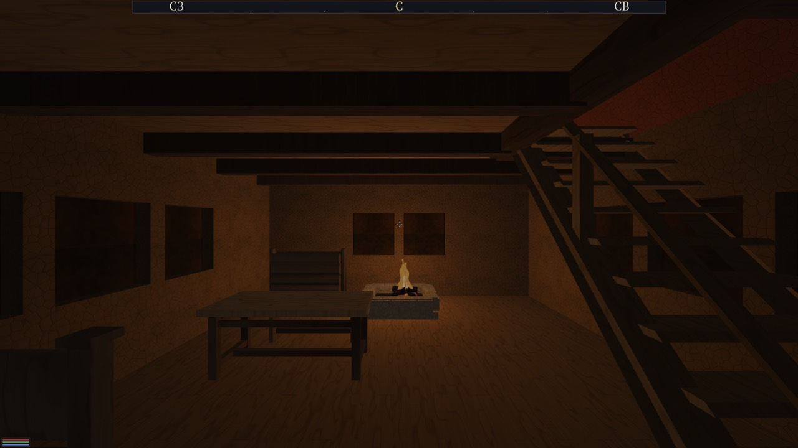
cornhall-house-s-old, ровно с порога. Марш справа, 45°, до его подножия 2.94 м от створки — «прямо у входа» здесь уже НЕ буквально. Но половина комнаты тонет в черноте, а марш — открытая стремянка на двух тетивах.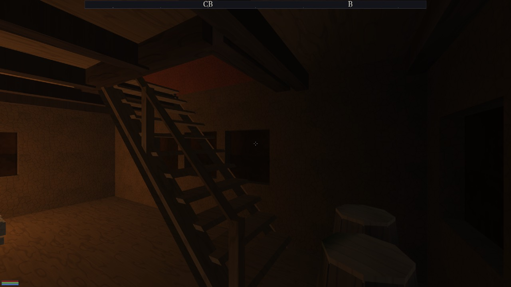
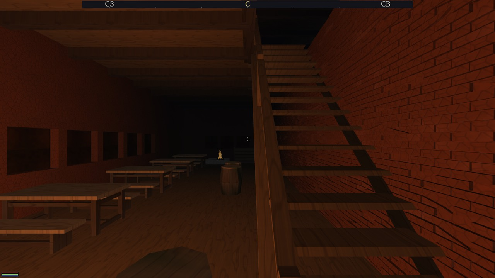
cornhall-inn, с порога. Вот это — «стоит криво прямо у входа»: тетива режет кадр пополам в полутора метрах от двери. Замер: подножие в 2.11 м от створки, марш 47.4°, 28 ступеней, проступь 0.161 м при радиусе капсулы игрока 0.35. Судья пропускает это молча: 47.4° < порога 49.85°, а минимальной проступи у него нет.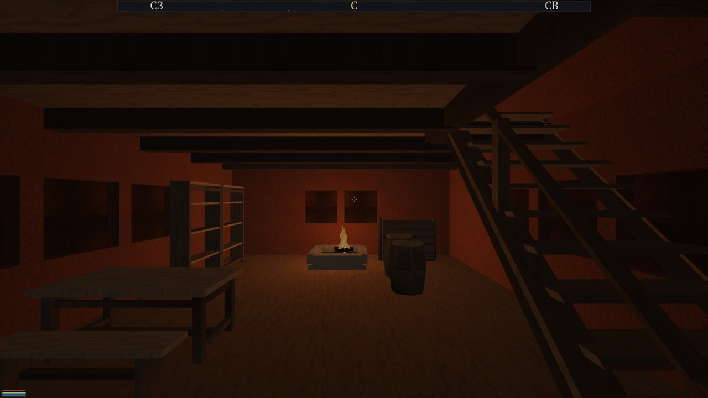
cornhall-house-jetty. Два марша подряд справа; верх первого упирается в балку наката. Оба — те же открытые трапы.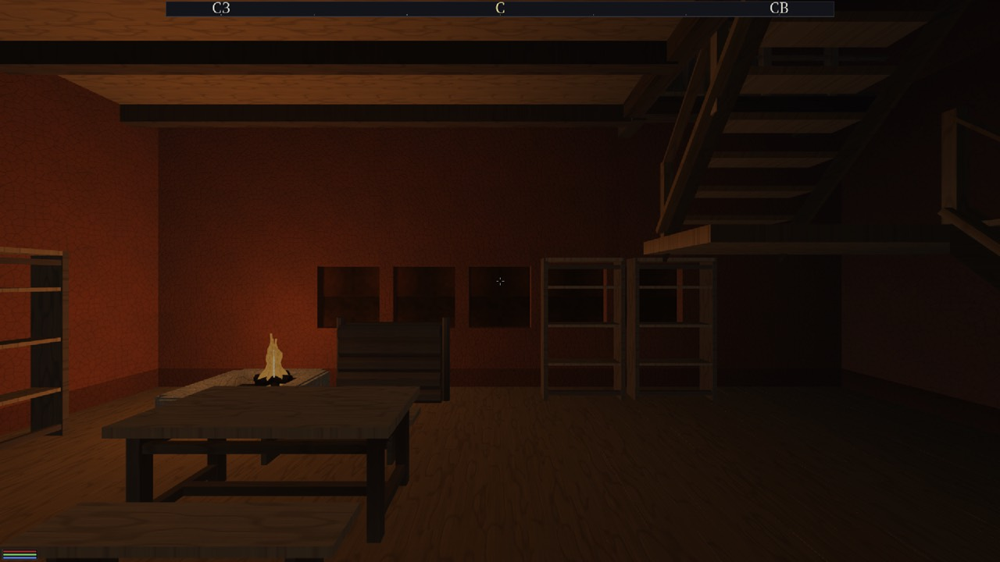
cornhall-arcade — и здесь честно: ЭТО ЛУЧШЕЕ, что есть. Два пролёта с площадкой между ними, марш читается как лестница. Такой дом в Житнове один из 107.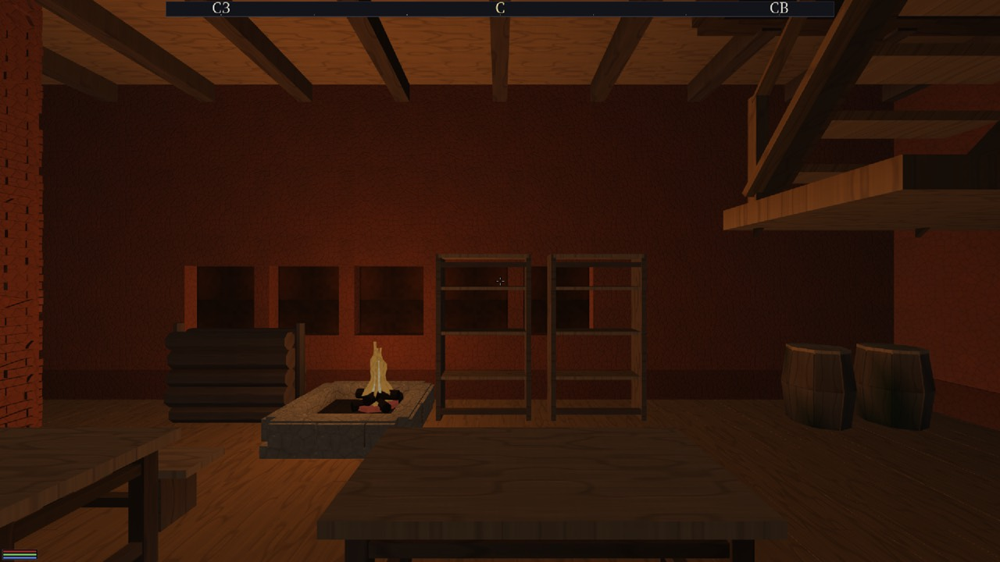
cornhall-townhall. Марш высоко справа, подножие вне кадра и вне освещённой зоны. У этой локации 4 находки судьи локаций «до предмета не дойти».Вайтран
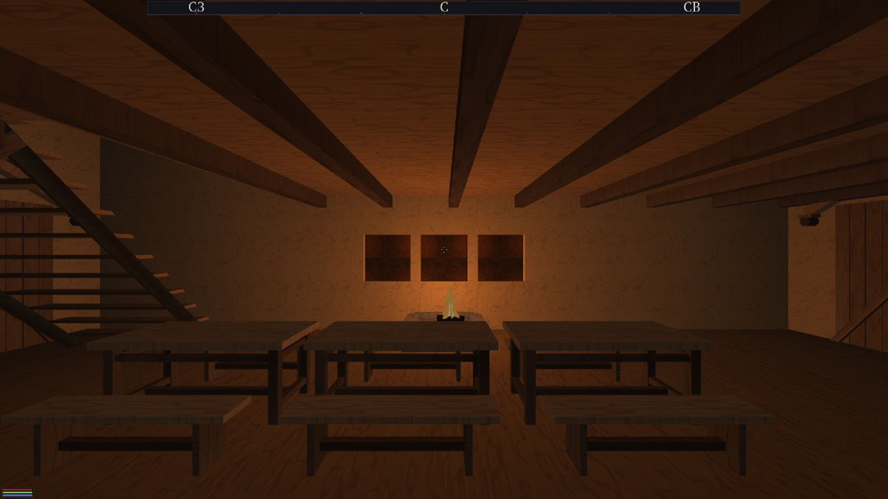
city-keep-s (замок). Марш слева, тот же открытый трап. У этого чертежа два марша: перепечённый 45° и НЕперепечённый e5 — 26.6°, 1.60 м подъёма на 3.20 м выноса. Второй остался ровно таким, каким владелец назвал его «слишком длинным и пологим».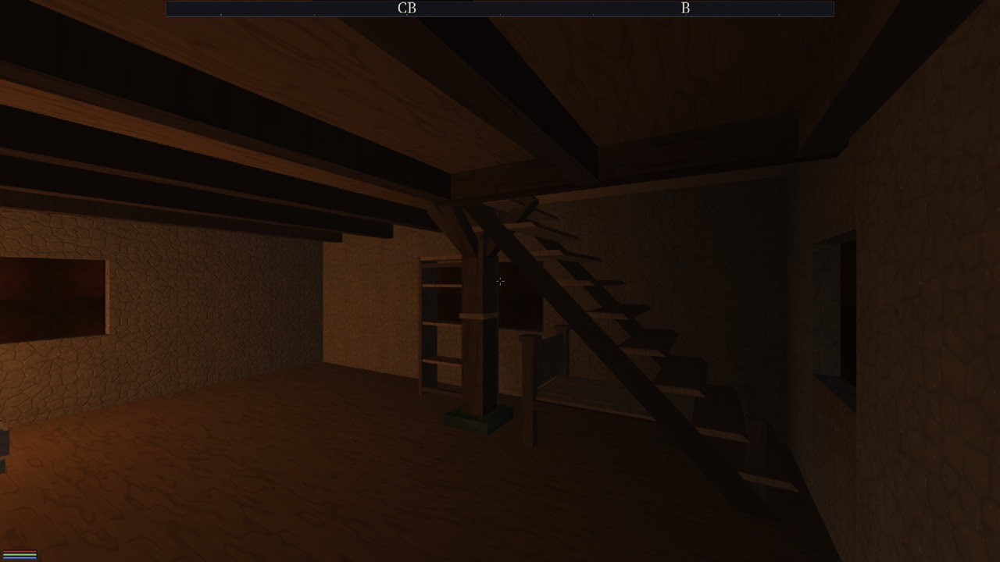
city-house-l (усадьба), доворот 60°. Марш справа входит прямо под балку перекрытия; над последними ступенями — тёмный проём, куда не падает ни один луч. У этого чертежа тоже пара: 45° и старый e32 26.6°.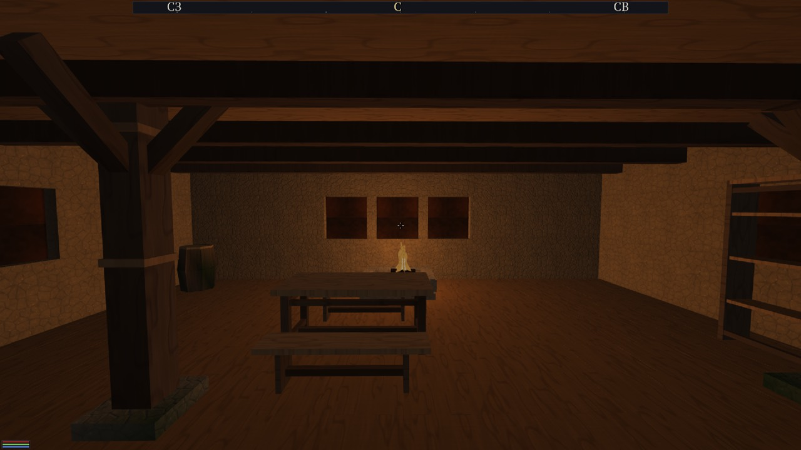
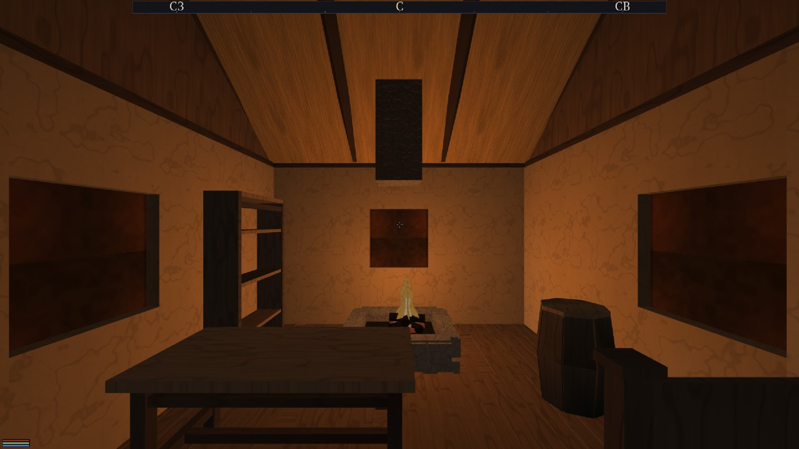
city-house-s — марша нет вовсе, и это НЕ дефект: дом честно одноэтажный. Важно другое число: из 23 входных локаций Вайтрана марш есть в 4. То есть в 19 домах из 23 разговор о лестницах не начинается.Два кадра, которые объясняют больше остальных
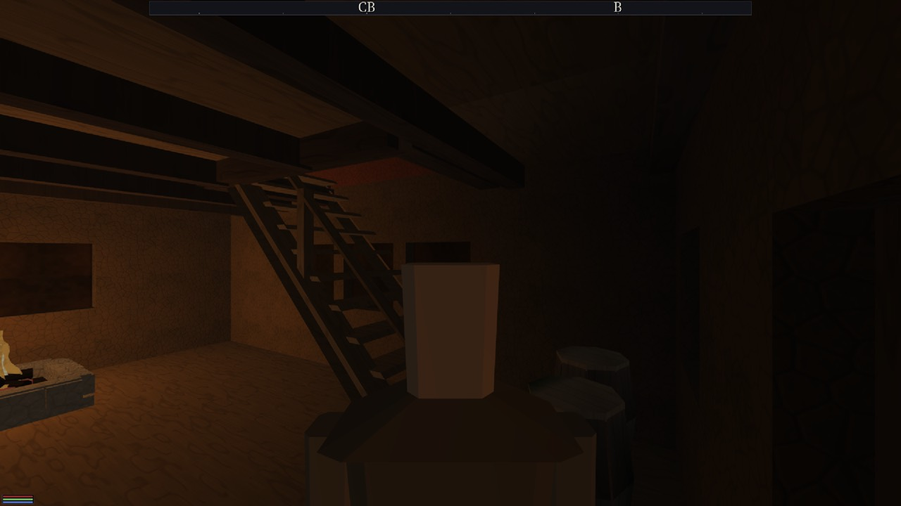
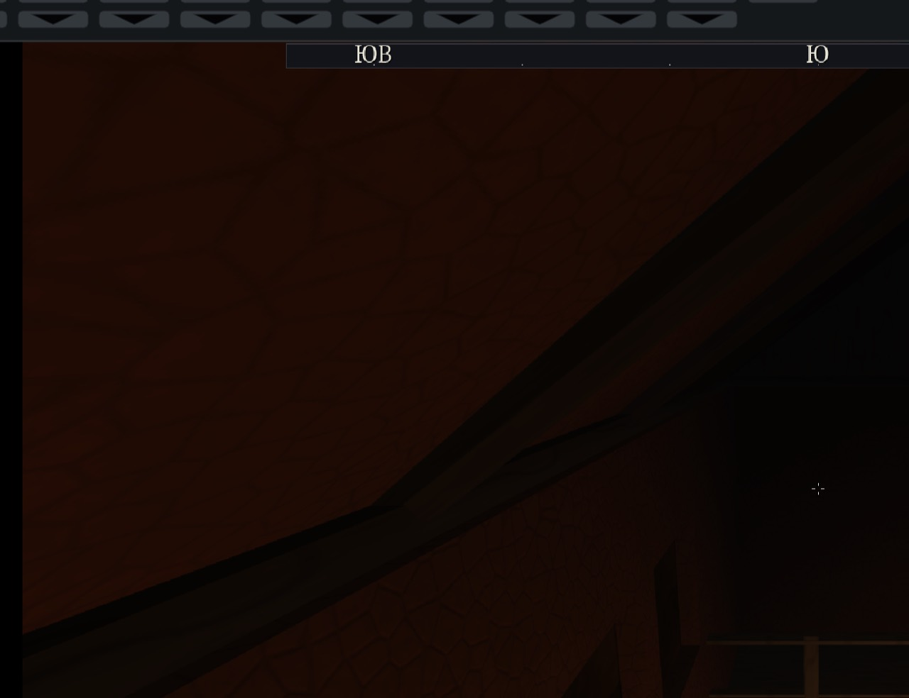
[light], на отметке 1.50 м, под настилом. Поднявшись по маршу, игрок выходит в чёрную пустоту.2. Почему прибор этого не видит — пять причин, каждая проверена
Главная: dfn_stairs_check не открывает ни одной сцены.
tools/check_stairs.cpp:821 берёт только .dfh. Он судит одинокий
чертёж в вакууме: без мебели, без соседей, без освещения, без локации, в которую
входит игрок. Всё, что рождается при СБОРКЕ локации, для него не существует.
- У уклона нет нижней границы.
check_stairs.cpp:582— находка выдаётся только приdeg > 49.85°. Половина крита владельца — «слишком длинные и ПОЛОГИЕ» — не может быть поймана по построению. Молча проходятcity-keep-s e5(26.6°),city-mill e12(26.6°),city-house-l e32(26.6°),cornhall-house-s* e78(29.1°). - Перепечена меньше половины маршей. Мой замер по всем 194 чертежам:
маршей 77, с новыми
rise=0.28 nosing=1— 35, старых — 42. Часть старых законна (уличные крыльцаcity-stoop*,city-steps*— их посадку генератор города правит своей таблицей). Но внутридомовые среди них есть, и это те самые пологие. - Нет минимальной проступи.
cornhall-inn e116: 28 ступеней, проступь 0.161 м. Стремянка, засчитанная как лестница. - Просвет мерится не по той поверхности, по которой ходят. Рука 3 ставит
капсулу на НОСОК ступени, а ходьба идёт по невидимому пандусу
(
HouseStairs.cpp:213-224), верх которого приnosing=0лежит наrise − 0.02ВЫШЕ линии носков. То есть у 42 неперепечённых маршей headroom систематически завышен на подступёнок. - Молчание там, где надо кричать.
check_stairs.cpp:371—if (flights.empty()) return;: дом без марша не даёт ни строки. «На второй этаж не подняться» и «второго этажа не существует» для судьи неотличимы от «всё хорошо». - Судьи нет в ctest.
CMakeLists.txt:319— дляdfn_stairs_checkестьadd_executableи ни одногоadd_test. Он был запущен рукой один раз, в день волны. Зелёные 96/96 о лестницах не знают ничего.
3. А прибор, который смотрит туда, куда ходит игрок, — КРАСНЫЙ
dfn_interior_check читает настоящие .scene локаций. Я
прогнал его своей сборкой по всем 130:
| прогон | находок | что именно |
|---|---|---|
assets/scenes/int/whiterun/*.scene | 6 | все в мельнице x132z182: до стола, трёх бочек, полки и лавки «от [spawn] не дойти: путь перекрыт» |
assets/scenes/int/cornhall/*.scene | 163 | 12 «не дойти» + 150 «предмет ВЫШЕ пола на 0.06–0.10 м» |
Двенадцать «не дойти» Житнова садятся точно на крит владельца. Шесть из них — в
шести домах cornhall-house-s-old, и все шесть про одну и ту же бочку на
(5.85, 7.15): это угол сразу за порогом, отрезанный тетивой марша. Ещё четыре
в ратуше, две в пивоварне. Волна И15 записала этот же класс в свой хвост честно и
дословно:
«9 “точка входа непроходима”, и это ХУЖЕ остальных: там мешает не мебель, а САМА ОБОЛОЧКА (лестничная клетка сразу за порогом уcornhall-house-s-old,cornhall-inn,cornhall-townhall). Проба генератора видит только пятна мебели у полки; внутренних стен рецепта она не знает.»
—docs/plans/INTERIORS_I15.md, раздел «Что осталось»
Полтораста «предмет выше пола» — все три постоялых двора Житнова
(x246z170, x264z416, x380z282), по 50 предметов
в каждом, ровно на 0.06 м. Это не разброс, это смещение отметки пола в одном
рецепте. Волна И15 насчитала у Житнова 16 находок; сейчас их 163 — значит между
той приёмкой и сегодня что-то отъехало, и разводить это надо с живой волной
мебели, а не приписывать лестницам.
И этот судья почти не заведён в ctest.
CMakeLists.txt:307-313 — interiors_pilot_clean запускает его
на ОДНОЙ сцене из 130: int/whiterun/x103z86.scene. Это, по совпадению,
одноэтажный дом БЕЗ марша и без единой находки. Плюс отрицательное плечо на
broken.scene. Остальные 129 локаций не проверяет никто и никогда.
4. Вердикт и точная причина расхождения
Прибор не врёт — он отвечает на другой, более узкий вопрос.
dfn_stairs_check честно проверяет пять свойств ОДИНОКОГО ЧЕРТЕЖА:
не круче 49.85°, подступёнок не выше 0.35, просвет над носком не ниже 1.90, марш не
в стене, стык пандуса не рвётся. По этим пяти вопросам боевых находок действительно
ноль, и правка волны настоящая: 35 маршей стали ровно 45° и потеряли ступеньку-перепрыг
на входе.
Глаз владельца тоже не врёт, потому что он смотрит на другое:
- на локацию, а не чертёж — а там марш отрезает угол за порогом (12 замеренных находок);
- на оставшиеся 42 марша, которых перепечка не коснулась, — те самые пологие 26.6°;
- на вид — открытый трап без подступёнков, перил и площадки, у которого нет ни одного прибора: красота не измеряется ни одной из пяти рук;
- на свет — марш и второй этаж лежат в неосвещённой половине дома, а наверху нет ни одного
[light]вовсе; - на назначение — в 19 из 23 домов Вайтрана марша нет, и «лестницы в домах» там просто отсутствуют как явление.
Причина расхождения одной строкой: лестницы принимали прибором, который судит чертёж в вакууме, одностороннними порогами, вне ctest — а живёт лестница в собранной локации, где на неё влияют мебель, свет и стены рецепта; единственный прибор, который туда смотрит, в ctest заведён на одну сцену из ста тридцати и прямо сейчас даёт 169 находок.
Статус крита (б): ЧАСТИЧНО. «Круче» — сделано на 35 маршах из 77.
«Не у входа» — сделано у house-s-old (2.94 м), НЕ сделано у
cornhall-inn (2.11 м и тетива поперёк комнаты). «Головой в потолок» —
геометрия проёма считается верно, но никто ни разу не проверил прогоном, что
игрок доходит по маршу до второго этажа: такого прибора в репозитории нет, а
рука 1 судьи локаций — плоская сетка на уровне спавна, она по лестнице не
поднимается.
Бэклог доводки — чтобы стало сделано И красиво
Порядок не произвольный: сначала то, что чинит приборы (иначе следующие волны будут снова сдавать зелёное на красном), потом глазные криты, потом обязательства эпохи. «Красиво» здесь значит: закрывается кадром, который владелец одобрит, а не только числом.
| # | Волна | Зачем | Чем закрывается |
|---|---|---|---|
| 1 | Приборы интерьеров — в ctest, по всем 130 локациям | Сегодня 169 замеренных находок живут вне ctest, а dfn_stairs_check не запускается вовсе. Пока это не закрыто, любая следующая лестничная волна снова сдаст «0 находок». |
add_test на весь каталог обеих локаций и на assets/houses; красный ctest сегодня, зелёный после волны 2. |
| 2 | 169 находок судьи локаций — в ноль | 12 «не дойти» (лестничная клетка за порогом, ратуша, пивоварня) — это дословный крит владельца. 150 «предмет выше пола» на трёх постоялых дворах — смещение отметки пола в одном рецепте, чинится в одном месте. | dfn_interior_check по 130 локациям = 0; пара кадров «до/после» из порога house-s-old и inn. |
| 3 | Марш как лестница, а не как трап | Главный глазной крит, у которого сейчас НЕТ прибора: нужны подступёнки (или закрытая тетива), перила, площадка на длинных маршах, и вторая линия — довести до нового rise/nosing оставшиеся внутридомовые из 42. Плюс минимальная проступь: 0.161 м у постоялого двора — стремянка. |
Новые руки судьи: минимальный уклон, минимальная проступь, наличие перил на маршах выше 2 м. Кадры тех же шести домов, что в этом отчёте. |
| 4 | Свет второго этажа и тёмных половин | Марш ведёт в чёрную пустоту в 69 локациях Житнова из 107 — там мебель есть, света нет. Это обесценивает всю лестничную работу: подниматься некуда. | Кадр второго этажа с мебелью, которую видно. Бюджет свода — ≤8 [light] на локацию, сейчас тратится 1. |
| 5 | Прибор «по маршу можно подняться» | Утверждение «на второй этаж поднимаешься» сегодня не предъявляет ни один прогон. Нужен беспилотный проход капсулой от [spawn] до предмета на верхнем ярусе — по тому же пандусу, по которому ходит игрок. |
Рука судьи локаций, поднимающаяся по лестнице; отрицательное плечо на нарочно сломанном проёме. |
| 6 | Сидеть и лежать | Объявленный владельцем БЛОКЕР очереди городов (28.08). Позы у скелета уже есть, прицел «радиус+взгляд» у дверей уже есть — не хватает меты «сиденье/лежак» у мебели реестра и ветки E. | Кадр «герой сидит на лавке» и «лежит на кровати»; поля в assets/objects/furniture/INDEX.md. |
| 7 | Мебель — в реестр объектов целиком | Крит (в) закрыт на одной кровати. Стеллаж и бочка приземлились чертежами — то есть ровно тем, на что владелец жаловался. И волне 6 всё равно нужна мета у объектов, а не у чертежей. | Строки в INDEX.md на стол, лавку, стеллаж, бочку, сундук; кадр «одна правка — изменились все». |
| 8 | LOD построек (И13) | Объявлен обязательством 27.08 («города внутри мира»), реализации нет ни строки. Без него большой мир не поедет, и это выяснится поздно. | Числа кадра на подходе к городу с 500 м; тесты рядом с test_coarse_lod. |
| 9 | Приборы нагрузки до конца | План сам говорит: оптимизировать без прибора нельзя. Есть FPS и frame_ms, нет RAM, диска и разбивки кадра — а волна 8 будет мериться именно ими. | Оверлей с памятью и этапами; замер до/после волны 8 одним бинарником. |
| 10 | Сейвы подключить к приложению | Формат и тесты есть, engine/app о них не знает, «Продолжить» — честная заглушка. На сейвах стоят квесты и RPG, и меню уже сегодня обещает то, чего нет. |
Прогон «вышел — зашёл — стою там же»; снятая заглушка в Menu.h. |
Что в этот бэклог сознательно НЕ попало: расширение мира до 24×19 чанков и снятие барьера ключа ячеек. Это не доводка, а новая большая зона, и она честно стоит за LOD (волна 8) и приборами (волна 9) — начинать её раньше значит мерить вслепую. Одиннадцать оставшихся городов стоят за волной 6 по прямому слову владельца.
Счёт
СДЕЛАНО (7): болванки домов; двери и загрузка помещения; меню как в Skyrim; строка лицензии в титрах; посадка Житнова; экран загрузки и интро; камера третьего лица не выходит за оболочку + один кегль меню.
ЧАСТИЧНО (6): лестницы; кровать в реестре; приборы нагрузки; сейвы; стриминг; персонажи-люди.
НЕ СДЕЛАНО (7): масштаб мира; LOD построек; сидеть/лежать; 12 городов; правила флоры по биомам; квесты кодом; RPG.
В РАБОТЕ (4): звук и настройки; визуал меню; прицел дверей; мебель по мерке героя — четыре живые волны, чьи правки лежат в дереве незакоммиченными. Их я не аудировал: судить незаконченную работу нечестно.
Аудит выполнен 27–28.08.2026.
Сборка build_audit от 9c8cafb; build_lead не
трогался. Кадры — docs/reports/big-audit/, сняты из глаза игрока с точки
входа локации (DFN_INTERIOR), кроме двух подписанных «свободная камера» и
«третье лицо».
Правки владельца к аудиту (28.08)
1. Биомы и растения — только с лоро-ведом: правила расположения биомов и растений (зона «Флора-2», правила посадки по карте) обсуждать ОБЯЗАТЕЛЬНО с лоро-ведом до фиксации — флора несёт лор (пояса мира Яан, бестиарий поясов, священные деревья), а не только ботанику.
2. Лор-ревью паспортов городов перед стройкой: прежде чем строить каждый следующий город, сверять его описание (паспорт) с лорной составляющей у лоро-веда — подходит ли город миру Яан, поясу именований, войне и пластам. Блокер очереди городов наравне с «сидеть/лежать».